#打印进阶玩法
#1 字符串连接
print('hello'+'world'+'!')
#单双引号转义（内容本身有引号）
#eg print("He said"good"")就理解不了
print('He is "good"')
#再例如 "He said "Let's go!""(单双引号都有)
print("He said\"Let \'s go!!\"")
#3 换行
print('hello!\nhi!')
#4三引号换行 怎么输入 怎么打印
print(""" 111111
111111
1
111111""")input
input("请输入你的年龄：？")
# 用一个变量获取用户返回的值
user_age =input("请输入你的年龄：？")
# 后续操作
print("知道了，你今年"+"user_age"+"岁了。")
# 注意 input返回的值一律按字符串类型处理 不能用于算数等操作
#如果需要对数值进行计算 可以转换数据类型
int(user_age)math库
#python的计算直接输入数值即可 用引号包裹会视为字符串
#导入函数库
import math #引用math库
math. log2(8) #求log2为底 8为对的值
rex = math.sin(1)
res = math.log2(8)
print(res)
print(rex)变量
#现实里想要存一个常用的信息 例如电话号码
My_Love = "123245666678"
MyLove = '12345666678'
print("拨打"+My_Love)
#换女朋友了用现任电话覆盖mylove，又重新存好前任
my_ex= MyLove
My_Love = "12344566675"
#打招呼
greet = "你好 吃了么"
greet_chinese = greet
greet = "what's up"
print(greet + " 张三")
print(greet_chinese + "张三")
#变量名 py3版本之后支持中文变量名（但不建议）数据类型
#字符串 str 整数 int 浮点数 float 布尔类型 bool 空值类型
len('hello')#得到字符串长度
print(len('hello'))
#提取字符串中的单个字符
"hello"[1]
print('hello'[1])
#bool
#Ture or False
#空值类型 定义一个变量 但暂时不知道值
yours = None
# 当你不知道所用数据是什么类型 用type
type("hello")
print(type("hello!"))
# 对字符串求长度
c = "hello world"
print(len(c))
print(c[6])条件判断
# if （条件）:
# 为真执行。。。。。。
# else:
# 条件为假执行。。。。
mood = int(input("对象今天的心情指数是："))
if mood >=60:
print("恭喜。。。。。")
else:
print("完蛋......")# demo1
mood = int(input("对象今天的心情指数是："))
if mood >=60:
print("恭喜。。。。。")
else:
print("完蛋......")
# demo2
is_at_home = True
if mood >=60:
if is_at_home:
print("放弃.....")
else:
print("ok")
else:
print("ohno")
#多层嵌套 elif(直到条件为真)
# if 条件1:
# 【语句1】
# elif 条件2:
# 【语句2】
# ........
# else:
user_wight = float(input("您的体重为（单位kg）："))
user_height = float(input("您的身高是（单位m）："))
user_BMI = user_wight / (user_height)**2
print("您的BMI为："+str(user_BMI))
if user_BMI < 18.5:
print("正常")
elif 18.5 <= user_BMI < 25:
print("正常")
elif 25 <= user_BMI < 30:
print("胖")
else:
print("肥")列表
# 与 或 非 and or not
#列表 购物清单
list_shopping = ["键盘","键帽","鼠标","显示器"]
# 添加东西入列表
list_shopping.append("作业")
# 这个是可变的，直接加在原有的列表上
#不可变
s="hello"
print(s.upper())#可以输出大写的s字符串 但是原有的s字符串是没改变的。
# 删除列表元素
list_shopping.remove("显示器")
# python列表可以放不同类型数据
len(list_shopping)#可以求列表内元素个数
print(list_shopping[1])#可以索引列表内元素，也可以利用索引赋值 覆盖列表元素
# 实践
shopping_list= []
shopping_list.append("键盘")
shopping_list.append("键帽")
shopping_list.remove("键帽")
shopping_list.append("音响")
shopping_list.append("椅子")
len(shopping_list)
print(shopping_list)
print(len(shopping_list))
shopping_list[2] = "手机"
print(shopping_list)
price = [799,1888,4999]
max = max(price)
min = min(price)
sort_price = sorted(price) #排列字典元组
phone1="1111111111"
phone2="2222222222"
print(phone1)
print(phone2)
#这样太麻烦了 可以用字典
contacts = ["11111111","222222222","333333333"]
#用键值对来实现
contacts1 = {"aa":"11111111111111",
"bb":"22222222222222" }
#如果通讯录有三个张伟 年龄不一样怎么区分呢? 元组
constacts2 = { ("zhangwei1",23):"11111111111",
("zhangwei2",33):"22222222222",
("zhangwei3",44):"33333333333"}
#添加键
contacts1["meinv"] = "444444444444"
#如果这个名字已经存在了就直接刷新这个名的对应值 得到新的失去旧的
#查看某个键是否存在
print("meinv"in contacts1)#存在返回true 不存在false
#len实用于字典
#实例 创建流行语词典
slang_dict ={"YYDS":"1111111111",
"juexnd":"2222222222"}
#添加新的
slang_dict["你是猪"] ="33333333333333333"
#查询功能
query = input("请输入你想查询的流行语")
if query in slang_dict:
print("您查询的"+query+"含义如下：")
print(slang_dict[query])
else:
print("没有")
print("当前收录数目为"+str(len(slang_dict))+"条")for 遍历 迭代 +字典输出拓展+range（）
#用for循环对不同数据类型进行筛选迭代
from itertools import count
from input import user_age
list1 = [1,2,3,4,5]#列表
dict1 = {"小米":1.78,"小花":1.65}
str = "Hello,world"
#格式 for 变量名（代表迭代对象里的每一样东西） in 可迭代对象 这个变量名没什么用（这个变量名会被依次赋值为列表的每一个元素）
#例如成绩
# for grand in list1:
# if grand > 3:
# print("完求了") #这样就知道有多少人完求了 但是不知道具体的信息
study_num = {"1":111,"2":222,"3":333}
for num,grand in study_num.items():
# 字典三种用法 ： 字典名.keys() #返回所有键
# 字典名.values() #返回所有值
# 字典名.items（） #返回键值对
if grand >= 115 :
print(num,grand)
#range:表示整数序列 range(5,10)前面是起始值 后面是结束值（结束值不在序列范围内）
#eg：
range(2,10)
for shuzu in range(2,10):
print(shuzu)
#range还可以包含第三个参数range(2,10,2) 第三个参数表步长（每次跨几个数字）不指明默认为1
range(2,20,5)format更改输出特定内容
#一段输出内容之间更改某几个数据
# format法
message_content = """
111111111111111111111111
111111111111111111111111
111111111111111111111111
111111111111111111111111
111111111111111111111111
1{0}11111111111111111111
1{2}11111111111111111111
1{3}11111111111111111111
""".format(0,2,3,4)
message_content1 = """
111111111111111111111111
111111111111111111111111
111111111111111111111111
111111111111111111111111
111111111111111111111111
1{year}11111111111111111111
1{name}11111111111111111111
1{name}11111111111111111111
""".format(name = 2,year = 1)
# f-字符串法
one = "ljj"
two = "222"
message_content2 = f"""
1111111111111111111111
1111111111111111111111
1111111111111111111111
{one}
{two}
"""def定义函数
#计算扇形面积 圆心角/360°*Π*r平方
central_angle_1 = 160 #圆心角
radius_1 = 30
sector_area_1 = central_angle_1 / 360 *3.14*radius_1 **2
print(f"此扇形面积为：{sector_area_1}")
# 定义函数
def calulate_sector_1():
central_angle_1 = 160 # 圆心角
radius_1 = 30
sector_area_1 = central_angle_1 / 360 * 3.14 * radius_1 ** 2
print(f"此扇形面积为：{sector_area_1}")
# 之后我们每次想要打印这个扇形的面积就可以直接调用函数
calulate_sector_1()
# 通过参数让函数更加通用
# def calulate_sector(central_angle, radius):
# central_angle = 160 # 圆心角
# radius = 30
# sector_area = central_angle/ 360 * 3.14 * radius ** 2
# print(f"此扇形面积为：{sector_area}")
# 注意 函数内的都是局部变量 出了函数是无法被运行的 现在这个函数只会计算 打印面积 不能把值给我们传出来使用 加个return(返回值)就好了
def calulate_sector(central_angle, radius):
central_angle = 160 # 圆心角
radius = 30
sector_area = central_angle/ 360 * 3.14 * radius ** 2
print(f"此扇形面积为：{sector_area}")
return sector_area
a = calulate_sector()面向对象（oop）
面向过程
首先说一下面向过程
过程是完成某个具体任务的代码（可以想象成函数）
面向过程的核心就是把要做的事情拆分成一个个步骤一一实现
例如一个atm机器 我们需要去记录很多零散的信息，这些散落的数据 一方面增加函数的参数数量，另一方面，各种零散的数据在传递过程中混在一起，随着代码长度、复杂度增加 不利于理解代码
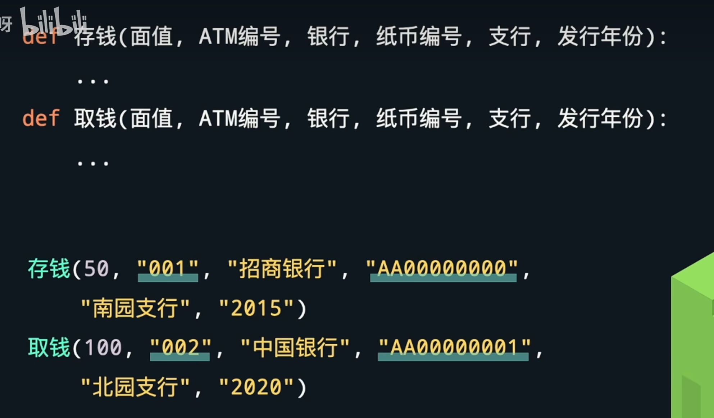
面向对象
而面向过程 要考虑对象有什么性质 需要做什么事情
依旧atm举例：
每个atm都有自己的性质 银行 编号 支行等 然后可以提取性质 定义atm类 用类创建对象
类是创建对象的模板 对象是类的实例
更通俗的说 类是制造具体对象的图纸
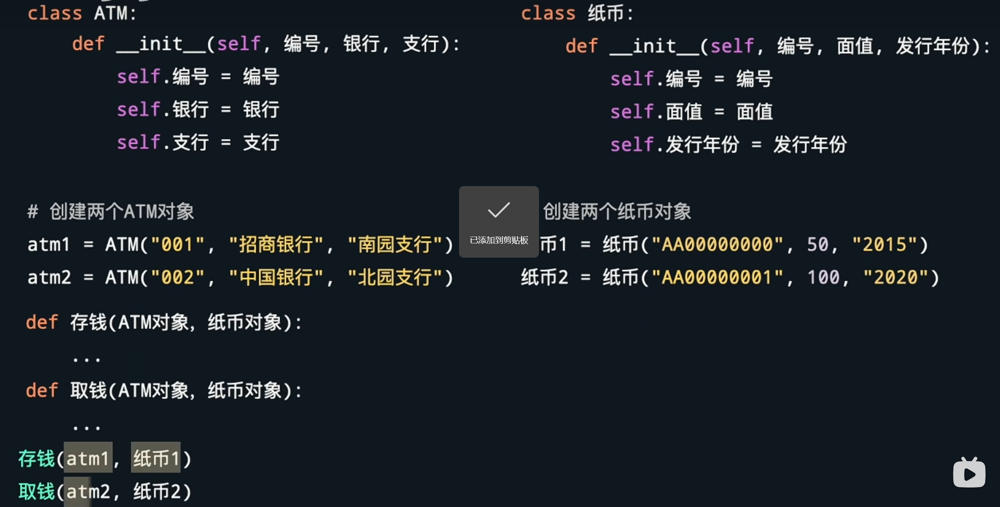
面向对象除了让参数变得更少之外 用对象把相关属性绑定在一起 利于让程序逻辑更加清晰。数据的流动更加清晰可观
方法
除了属性 还有一个与对象绑定的是方法 属性对应对象性质 方法对应对象能够做什么
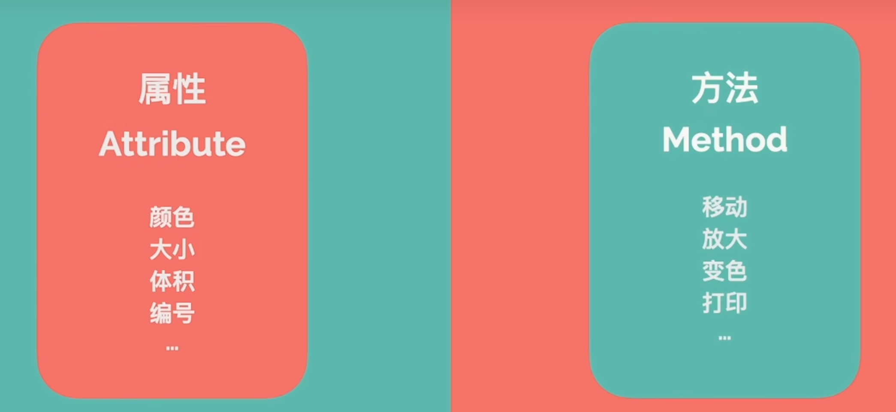
eg ：洗衣服
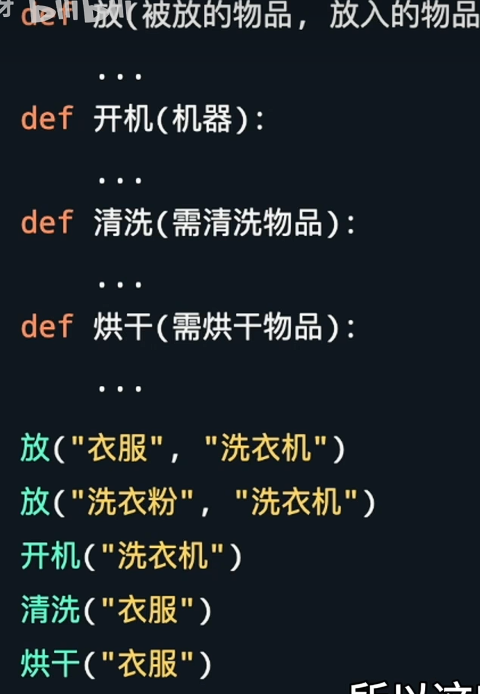
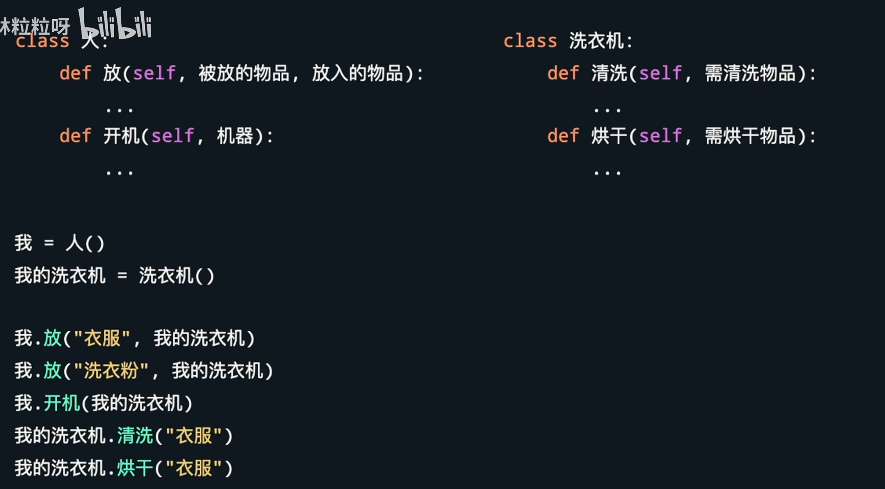
面向对象三特性 封装 继承 多态
封装
表示 编写类的人 ，将类的内部实现细节隐藏起来
使用类的人只通过外部接口访问、使用
接口：被大致理解为提供使用的方法 例如洗衣机 使用的人只需要知道他有什么方法 方法有什么作用即可 不需要知道方法具体是怎么实现的（直接按开关和各种功能按钮）
继承
表示面向对象编程允许创建有层次的类（现实中的儿子继承爸爸 爸爸继承爷爷）
类也有子类和父类来表示从属关系
例如
大学生和小学生 都是学生 且都要去学校
我们可以创建一个叫学生的父类 ；而大学生和小学生就是父类衍生出的子类
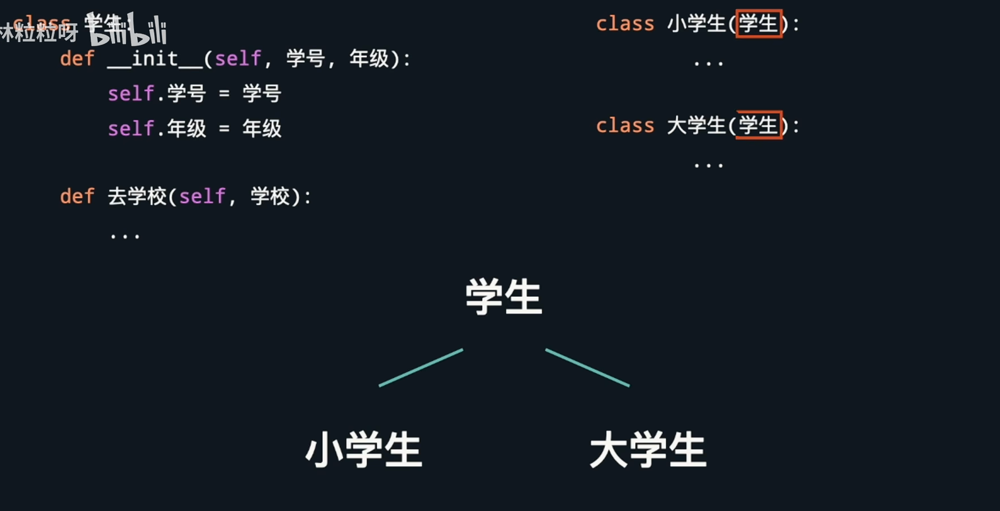
这样做的好处就是父类的属性、方法都可以继承 不需要被重新 反复定义
多态
同样的接口 因为对象具体类的不同 而有不同的表现
小学生和大学生都要写作业 但是作业的难度是不同的 所以写作业的方法不能直接定义在父类（学生）里面 ，而是分别定义在子类里
而作为家里同时有大学生和小学生的家长 大学生和小学生写作业时，不用管具体的作业难度，都可以一视同仁，调用写作业方法，而子类对象由于所属类的不同，执行不同的写作业方法。
如果不用类的话 还需要用if去判断学生的类型
创建类（class）
类定义属性
# class 类的名字 :
from unicodedata import category
# 定义类的代码
class CuteCat :
# 有了对象我们需要定义对象的属性 使用def _init_(括号内可以放任意数量的参数，第一个参数永远是被self占用的“表示对象自身”)
#注意 每个对象不一样的信息如同姓名 考号等需要作为参数放入括号中给与，而一个类中固定的信息（就是所有人都一样的信息 比如电子科大的学生学校都是电子科大 我们创建学校这个信息时可以直接self.school=“电子科大”）不需要上面括号内再给参数school
def __init__(self,cat_name,cat_age,cat_color) :
self.name = cat_name
self.age = cat_age
self.color = cat_color#这里cat_name作为这个类中的一个参数 而这个参数被我们传入了name这个属性 这个参数就直接定义猫的名字
#这里我们相当于制造了一个cutecat的类型蓝图 要求类型必须有猫猫名字 然后我们需要一个实例
cat1 = CuteCat("匡俊衡",19,"橙色") #定义好一只猫猫
print(f"出生{cat1.name}的年龄是{cat1.age}岁，花色是{cat1.color}")类创建方法
#先创建一个类 定义属性
class man :
def __init__(self,name,age,color):
self.name = name
self.age = age
self.color = color
# 定义方法
def speak (self): #定义动作speak
print("汪"*int(self.age))
def think (self,content): #定义think方法
print(f"小人{self.name}在思考{content}")
# 现在创建一个man
man1 = man("匡俊衡","19","好色")
man1.speak() #调用speak方法 方法也可以放入各种参数
man1.think("去找女朋友还是男朋友")
# 实践：
# 定义学生类
# 属性包括 姓名 学号 以及语文 数学 英语 三科目成绩
# 能够设置学生某科目成绩
# 能够打印学生所有科目成绩
class Student:
def __init__(self,name,id):
self.name = name
self.id = id
self.grades = {"语文":0 ,"数学":0 ,"英语":0} #当每个对象都有一样的初始值 就不需要从参数获取 可以直接定义
def set_grade(self,course,grade): #定义方法设定成绩
if course in self.grades: #判断是否属于需要的三个学科
self.grades[course] = grade父类、子类继承
# 人和猫有很多特性 比如 两只眼睛 一只嘴巴 一个鼻子 会拉屎 也有很多不一样的 例如人类没有尾巴 小猫不会阅读等
# 代码通常要保持dry原则 （不重复）所以我们可以通过类里的继承特性来描述这两个个体
class Mammal: #哺乳动物类 人类和猫都可以继承这个类
def __init__(self,name,sex):
self.name = name
self.sex = sex
self.num_eyes = 2
#创建方法：（注意这是都符合子类的方法 所以写在mammal类的下面）
def breathe(self):
print(self.name+"在呼吸")
def poop (self):
print(self.name+"在拉屎")
# 开始构建子类
# 而对于尾巴数量这种子类属性不一样的情况，我们在子类里继续init定义子类
#但是这种给子类init属性的写法 由于就近原则 我们使用子类时他就只有has_tail属性
# 我们可以把name sex属性重新在子类上写一遍但是又代码重复了，所以需要用到super
class Human(Mammal):
def __init__(self,name,sex):
super().__init__(name,sex) #用super继承父类的属性。不用重复敲写属性
self.has_tail = False
def read (self):
print(self.name+"阅读ing")
class Cat(Mammal):
def __init__(self,name,sex):
super().__init__(name,sex)
self.has_tail = True
def scarch_sofa(self):
print(self.name+"抓沙发ing")
# 注意阅读和抓沙发都是定义在子类后面的，这两个方法是子类独有的方法用代码操作文件
根目录用 / 表示
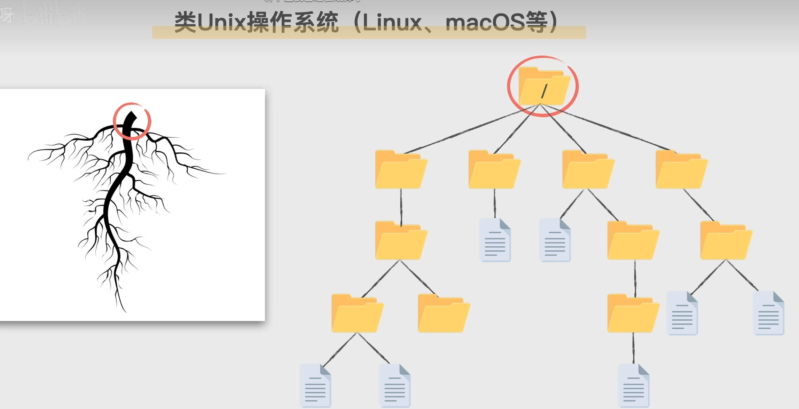
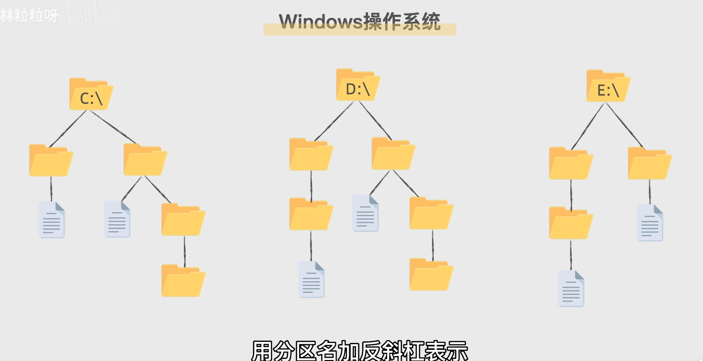
访问文件 绝对路径
linux Windows
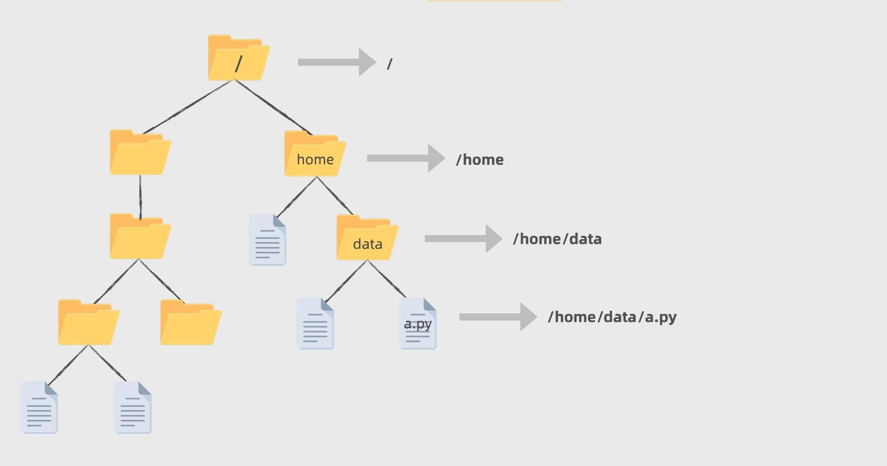
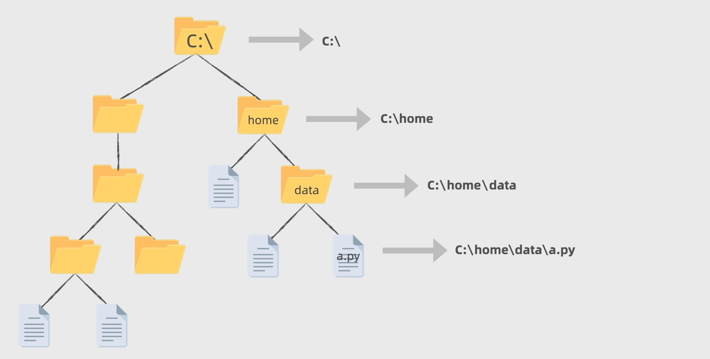
打开文件&读文件
# 打开文件
content = f.read()
print(content)
# readline读取
content = f.readline()
print(content)写文件
with open(r"D:\PythonProject\文本.txt","w",encoding="utf-8") as f: #这个f相当于给当前文件贴个标签 用来调用我们需要操作的文件
# 写文件状态下 如果文件路径没有东西 他就会自动创建文件· 但是读文件情况下没有文件会直接报错
# 还有注意的是 如果文件已经存在我们通过w写入 原来的文件内容会被清空
#写文件操作 write()
f.write("hello\n")#在文件中写入hello #想有换行效果手动加换行符
f.write("yoooo")
#这时候我们的需求是加入东西 同时不删改源文件 这时候就需要a（附加）
with open(r"D:\PythonProject\文本.txt","a",encoding="utf-8") as f:
f.write("hello")
#还有一点 我们写文件都是用的a or w 模式 这两个模式是不支持我们read文件的，那岂不是要重新open一遍写一次r 其实不用
# 我们用r+即可支持读写文件
with open(r"D:\PythonProject\文本.txt","r+",encoding="utf-8") as f:
content = f.read()
# 以上写法都可能报错 因为可能把\pl理解成转义字符 可以在"D:\PythonProject\文本.txt"前面加个r程序异常类型
1 索引
num_list = [56,11,21,22]
num_list[4]
#长度范围之外的索引 index error2数字除以0
print(56/0) zerodivisonerror等等等等........................................................
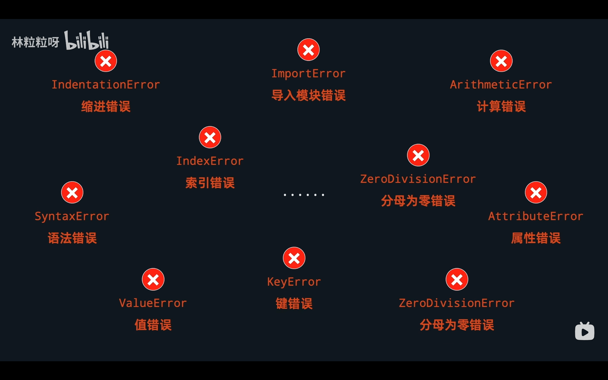
预判异常
例如之前算BMI的程序 要求用户输入数字 但是傻鸟客户偏要写一首诗 这就直接报错了
所以我们需要直接预判报错
#用try except来预判报错
try :
#后面跟上可能会报错的代码
weight = float(input("1111111"))
except ValueError: #except后面跟预判的报错 这里是输入无法转换类型的文字
print("输入的格式不对 重新打开程序输入")
#我们没有能力捕捉所有程序的未知错误 可以直接
except：
print("出现未知错误，重新运行程序")
else:#这个指用户输入是我们的预期 正常输入的结果
print("BMI为"+str(weight))
finally: #finally牛逼的地方就是不管程序炸没炸 都会执行
print("程序结束")#无论程序错误与否 最后都可以执行的尾句测试代码(没怎么写这个 用的不多)
assert
assert作为布尔类型返回值
#使用
assert len("hi")==2 #在assert后面放入我们觉得true的表达式
#如果真的为true 则屁事没有 如果为false 侧报错 assertionerror
#一旦出现asserterror程序就直接终止，我们就不知道后面还有没有问题 所以一般用专门测试的库，可以一次跑多个测试用例
#unittest python自带的常用测试库 对软件中最小可测试单元进行验证
import unittest